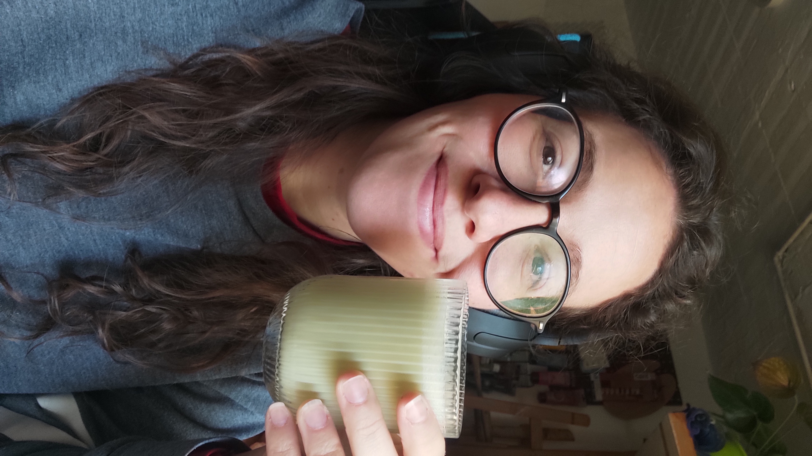

Creativity as my cornerstone
There's never been a time in my life without something in my hands: a brush, an idea, or a new way of perceiving the world.
Creating is how I understand, process, and express my reality.
An explorer at heart
My path has taken me through painting, sculpture, photography, philosophy, psychology, and most recently: front-end development.
Each discipline taught me that innovation doesn't come from working harder — it comes from connecting unexpected dots and letting curiosity lead the way.
Design and empathy
I believe design should make people's lives better. That's why empathy and human connection are always at the core of what I do.
I'm drawn to challenges where I can blend art and logic, analyzing every variable without losing sight of what truly matters: people.
When passion strikes, time stops
When I'm truly immersed in a project, I enter that deep state of flow where my mind explores hundreds of scenarios until I find a solution that feels both logical and emotionally adequate.
I solve design problems the same way I approach a 2000-piece puzzle: study the picture on the box, trust the process, and enjoy finding where each piece belongs.
Outside of work, I recharge through painting, puzzles, nature, and music: the things that inspire me and remind me why I create.
Let's connect!
I love meeting people who share the same curiosity for design, creativity, and human stories. Whether you want to collaborate, chat about ideas, or just say hi - I'd love to hear from you.